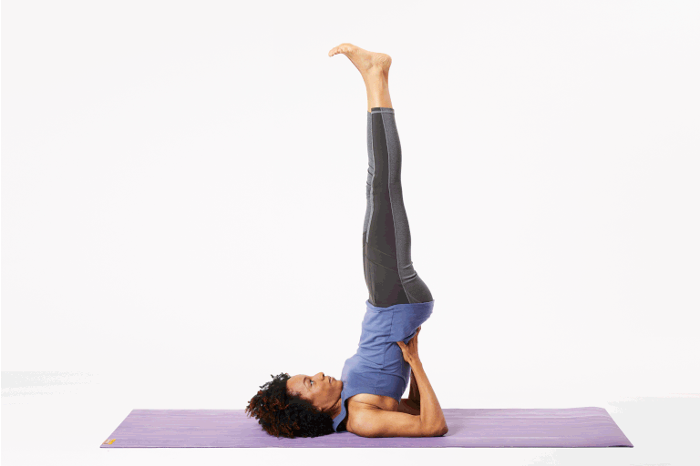
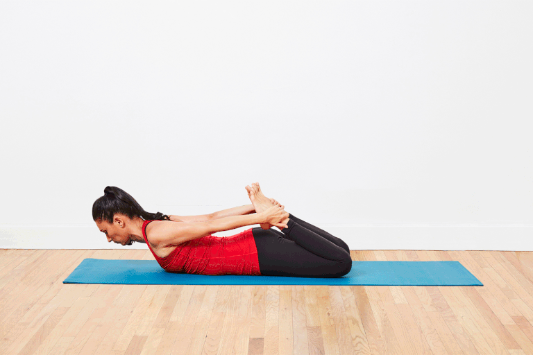
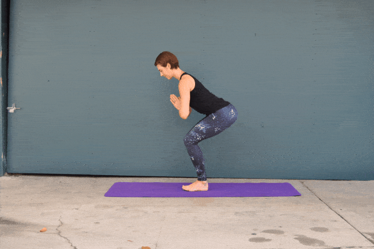

Yoga For Weight loss
The postures are to be performed one after the other in a smooth continuous motion. It builds heat in the body and improves strength and stamina which leads to weight loss, when practiced regularly.
1 Downward facing dog pose

- Come onto your fours. Form a table such that your back forms the table top and your hands and feet form the legs of the table.
- As you breath out lift the hips up, straightening the knees and elbows, form an inverted V-shape with the body.
- Hands are shoulder width apart, feet are hip width apart and parallel to each other. Toes point straight ahead.
- Press your hands into the ground. Widen through the shoulder blades. Keep the neck lengthened by touching the ears to the inner arms.
- Hold the downward dog pose and take long deep breaths. Look towards the navel.
- Exhale. Bend the knees, return to table pose. Relax.
2 Traingle pose

- From a standing position with the legs 3 feet apart, turn the right toes to the right wall and the left toes slightly inwards. Inhale and press the left hips out to the left as you slide both arms to the right parallel to the floor.
- Exhale and rotate only the arms, raising the left arm up and resting the right hand against the right leg, with the palms facing forward.
- Press into the feet, pull up the knee caps, keeping the legs strong. Reach the finger tips away from each other, bringing the arms into one straight line with the shoulders stacked on top of each other. Press the left hip forward and the right hip back.
- Breathe and hold for 3-6 breaths.
- To release: inhale and reach the raised hand up towards the ceiling as you press down into the feet using the whole body to lift back.
- Repeat on the other side.
3 Bridge pose

- Lying on your back, place your feet flat on the floor, a comfortable distance away from the hips.
- Place your arms next to the ribcage. You can either bend your elbows 90 degrees so that your fingers are pointing to the ceiling or hold onto the outer edges of your mat.
- On an inhalation, press the back of your shoulders and your feet into the floor and lift your hips up.
- Press the inner feet down actively and keep the knees from spreading out wide, by engaging the inner thighs
- Lengthen your tailbone, slide your shoulder blades down your back and keep your neck neutral
- You can look straight ahead or up towards the ceiling.
- Stay for 1 to 5 breaths
- To come out of the pose, release the arms and roll your spine down on an out-breath
4 Shoulderstand

- Start with a stack of two folded blankets. Lay down on your mat aligning shoulders onto the blankets. With legs bent and feet on the floor (as if setting up for bridge pose) begin to walk your shoulders underneath your upper back feeling the chest gently rising.
- Lift your hips off of the mat coming into bridge pose and extend your arms onto the ground, palms facing down as if your hands could touch your heels. Press firmly into the palms using them as leverage to lift onto the balls of the feet and extend one leg up. Bend at the elbows, place your hands on your low back creating a shelf, and then extend the next leg up.
- Once you raise the legs, don't turn your head to the side to look around the room, since you can injure your neck. Keep your gaze upward and your neck straight.
- Lift up through the balls of your feet. Walk your hands further up the back for more stability. Feel the chest reaching towards the chin to support opening the upper back.
- Move your hips toward the front of the room and your feet toward the back of the room to straighten the body. The correct alignment is with the hips over the shoulders and feet over the hips. Ask your teacher or a friend to help you determine if your legs are perpendicular to the floor.
- Stay in the pose for up to 10 breaths.
- To come out of the posture, lower the knees to forehead. Bring your hands to the floor, palms facing down. Without lifting the head slowly bring your spine down, vertebra by vertebra, completely to the floor. Lower the legs to the floor. Relax for a minimum of 60 seconds.
5 Bow pose

- Lie flat on your stomach. Keep your chin on the mat and your hands at your sides. Your hands should be palm up.
- Exhale while you bend your knees. Bring your heels as close as you can to your buttocks. Your knees should be hip-width apart.
- Lift your hands and take hold of your ankles. Be sure to grab the ankle and not the top part of the feet. Your fingers should wrap around the ankles, but your thumb does not. Keep your toes pointed.
- Inhale and lift the heels away from the buttocks, keeping a hold of your ankles. Simultaneously, lift your head, chest, and thighs away from the mat. As you lift, rotate your shoulders safely and comfortably. At this point, only your core should touch the mat, while the rest of your body is lifted towards the ceiling.
- Draw your tailbone into the mat to deepen the stretch. You should feel the stretch in your back as the weight and balance shifts to your core. Your chest and shoulders should feel open.
- Look straight ahead and hold the pose for about 15 seconds while you focus on stretching, breathing, and balancing.
- Exhale and release the pose. Lower your head, chest, thighs, and feet back towards the mat. Let go of your ankles and return to your hands to your side. Relax for a few seconds and repeat the pose as needed or continue to your next pose.
6 Twisted Chair

- Begin in chair pose with knees together and weight mostly in your heels.
- Bring your hands together into a prayer position at the center of your chest.
- Inhale to lengthen your spine. Exhale to hinge forward then twist to your right, hooking your left elbow outside your right thigh.
- Press your palms together to create more space between your collarbones.
- Keep your knees together. Lower your hips an extra inch.>
- Hold for 3-5 breaths before releasing to a forward fold. Return to chair and repeat on the other side.
7 Dolphin Pose

- Come onto your hands and knees (all fours). Place your forearms on the floor, your elbows directly under your shoulders. You can either place the palms of your hands down with your forearms parallel with each other or interlace your fingers, tucking the bottom little finger in.
- As you exhale, curl your toes under. Engage your lower belly and lift your knees away from the floor
- Lift your sitting bones up and lengthen the tailbone as you straighten your legs and lower the heels towards the floor – they do not need to touch the floor.
- Engage your thigh muscles and keep the lower belly drawn in, press the forearms actively into the floor.
- Firm your shoulder blades down onto your back while maintaining space between them. Lengthen your spine. Hold your head between your arms, off the floor.
- Stay for 5 to 20 breaths.
- To come out of the pose, allow your knees to come back onto the floor as you exhale and rest in Child’s Pose.
8 Dolphin Push-Ups

- Move your forearms to a V position so that you can interlace your fingers the way you would in preparation for a Headstand. This gives you a little more traction as you begin to move, but you can also leave the hands separate and arms parallel if you prefe
- Move your torso forward so that your face comes over your hands, while inhaling. The elbows will be lined up under your shoulders. Keep your body straight as you would in a plank position. In fact, this is basically a forearm plank with the hands clasped.
- Push the hips back to Dolphin while exhaling. This is the basic back and forth motion of the Dolphin Pushup.
- Try to do 10 reps, moving the torso forward to a plank position on the inhale and pushing your hips back to dolphin on the exhale.
- When your set is complete, come down and rest in Child's Pose. Depending on your stamina, you could try to go for one or two more sets of 10. If that's not possible yet, work up to it.
9 Tree Pose

- Take a moment to feel both your feet root into the floor with your weight distributed equally on all four corners of each foot.
- Begin to shift your weight into your right foot, lifting your left foot off the floor. Keep your right leg straight but don't lock the knee.
- Bend your left knee and bring the sole of your left foot high onto your inner right thigh.
- Press your foot into your thigh and your thigh back into your foot with equal pressure. This will help you keep both hips squared toward the front so your right hip doesn't jut out.
- Focus your gaze on something that doesn't move to help you keep your balance.
- Take 5 to 10 breaths, then lower your left foot to the floor and do the other side.
Load More